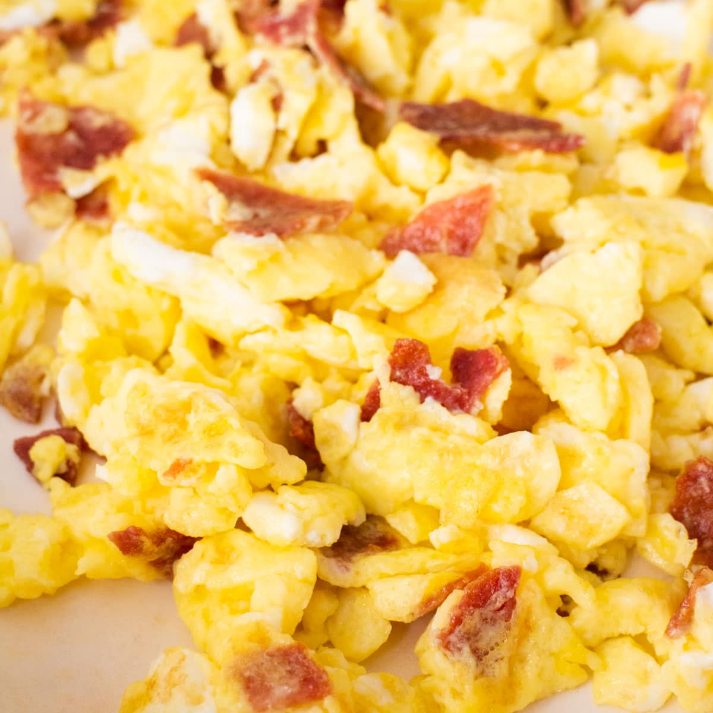

Bacon and Eggs

Description
Need a simple breakfast to satisfy you in the morning? Well look
no further than this recipe for that quick fix!
With only a handful of ingredients you too could make a versatile,
delicious breakfast that will fill your belly and leave you ready
for the day to come!
Ingredients
- Eggs
- Bacon
- Salt and Pepper
Steps
- Heat a small/medium pan to medium heat.
-
While the pan is heating up slice your bacon into pieces.
- Once the pan is hot enough put the pieces of bacon into
the pan
- Cook the bacon as well as desired (I like my bacon crunchy
:D)
- Once the bacon is cooked to your liking, crack the eggs into
the pan with the bacon still in there.
- Scramble and mix the eggs with the bacon and cook your eggs
to your liking.
- Right before the eggs finish cooking, add salt and pepper to
taste.
- Enjoy!